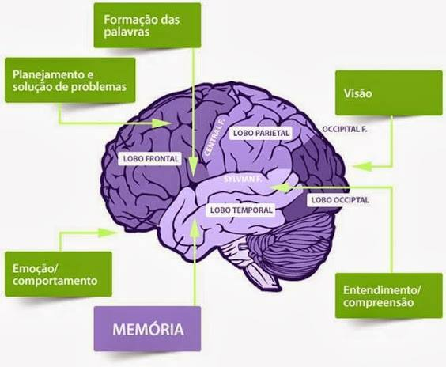
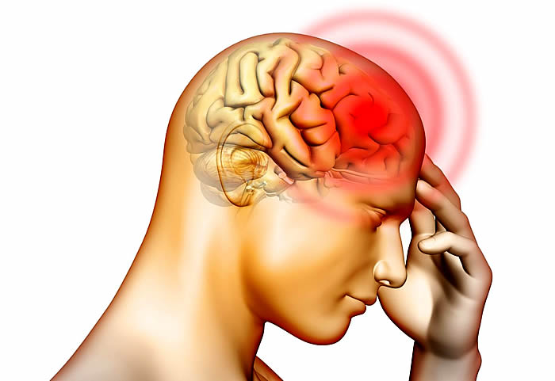
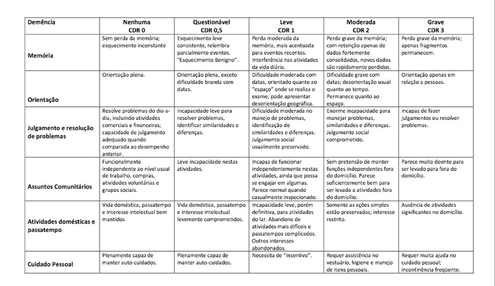
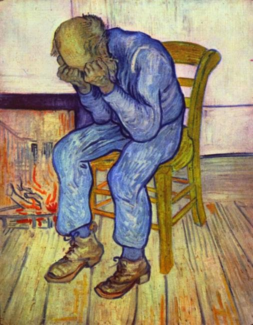
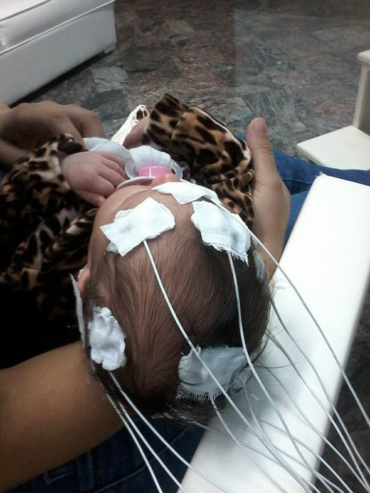
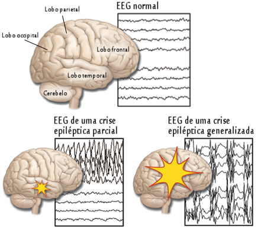
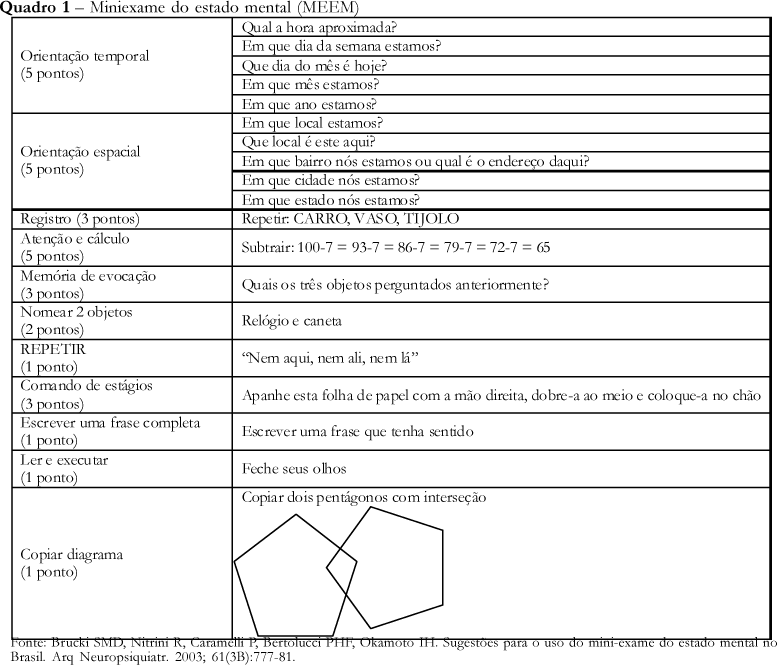

Anatomia normal do cérebro

Cefaleia

A dor de cabeça, ou cefaleia, é a queixa mais comum entre os brasileiros, segundo pesquisa do Ibope. Aproximadamente 90% da população adulta tem pelo menos um episódio de dor de cabeça durante a vida. A dor de cabeça é um problema médico considerável, com impacto físico, social e econômico relevante. A ideia de que as dores de cabeça crônicas não têm tratamento está errada. É possível se oferecer melhor qualidade de vida para os doentes que sofrem com esse mal.
Demência

A demência é uma doença mental caracterizada por prejuízo cognitivo que pode incluir alterações de memória, desorientação em relação ao tempo e ao espaço, raciocínio, concentração, aprendizado, realização de tarefas complexas, julgamento, linguagem e habilidades visuais-espaciais. Essas alterações podem ser acompanhadas por mudanças no comportamento ou na personalidade (sintomas neuropsiquiátricos).
Os prejuízos, necessariamente, interferem com a habilidade no trabalho ou nas atividades usuais, representam declínio em relação a níveis prévios de funcionamento e desempenho e não são explicáveis por outras doenças físicas ou psiquiátricas. Muitas doenças podem causar um quadro de demência. Entre as várias causas conhecidas, a Doença de Alzheimer é a mais frequente.
Depressão

Depressão é um problema que pode acometer qualquer pessoa: homens, mulheres, jovens e idosos e vai além de sentir-se triste por alguns dias. Perder o emprego, ter alguém próximo que morreu ou terminar um relacionamento leva a um momento de profunda tristeza, de luto, até conseguir dar a volta por cima. Isso faz parte da vida e a maioria de nós passará por momentos assim ao longo da vida. Isso não significa que ela está em depressão. Algumas vezes a depressão pode ser desencadeada por algum desses eventos, que chamamos de gatilho; outras vezes pode surgir aparentemente do nada.
Fique atento se a tristeza é desproporcional ao fato que conduziu a ela, se aparece sem motivo aparente e/ou se ocorre em qualquer tipo de situação. Em caso afirmativo, procure um profissional da saúde. Estamos aqui para ajudá-lo.
EEG

O eletroencefalograma (EEG) ou eletroencefalografia é um exame que permite o estudo do registro gráfico das correntes elétricas espontâneas desenvolvidas no cérebro, através de eletrodos aplicados no couro cabeludo, na superfície encefálica ou até mesmo dentro da substância encefálica. O EEG vinha perdendo terreno para outros métodos de diagnóstico, mas a união com a informática e tecnologia deu-lhe novo impulso, conquistando um lugar proeminente no diagnóstico de vários problemas cerebrais e contribuindo também com outras técnicas terapêuticas.
O procedimento dura em torno de 30 minutos e, terminado o exame, o paciente pode retornar às suas atividades normais. Em crianças que não se adaptem bem ao exame, pode ser feita uma leve sedação. A partir de um padrão de normalidade, o médico especializado é capaz de medir as alterações existentes e fazer as correlações necessárias com os dados clínicos do paciente, obtendo um diagnóstico.
Epilepsia

Epilepsia é uma alteração temporária e reversível do funcionamento do cérebro, que não tenha sido causada por febre, drogas ou distúrbios metabólicos. Durante alguns segundos ou minutos, uma parte do cérebro emite sinais incorretos, que podem ficar restritos a esse local ou espalhar-se. Se ficarem restritos, a crise será chamada parcial; se envolverem os dois hemisférios cerebrais, generalizada. Por isso, algumas pessoas podem ter sintomas mais ou menos evidentes de epilepsia, não significando que o problema tenha menos importância se a crise for menos aparente.
Exames como o eletroencefalograma (EEG) e neuroimagem são ferramentas que auxiliam no diagnóstico. O histórico clínico do paciente, porém, é muito importante, já que exames normais não excluem a possibilidade de a pessoa ser epiléptica. Se o paciente não se lembra das crises, a pessoa que as presencia torna-se uma testemunha útil na investigação do tipo de epilepsia em questão e, consequentemente, na busca do tratamento adequado.
Mini Mental

Mini mental é o teste mais utilizado para avaliar a função cognitiva por ser rápido (em torno de 10 minutos), de fácil aplicação e por não requerer material específico. Deve ser utilizado como instrumento de rastreamento e não substitui uma avaliação mais detalhada, pois, apesar de avaliar vários domínios (orientação espacial, temporal, memória imediata e de evocação, cálculo, linguagem-nomeação, repetição, compreensão, escrita e cópia de desenho), não serve como teste diagnóstico, mas sim como indicador das funções que precisam ser investigadas.